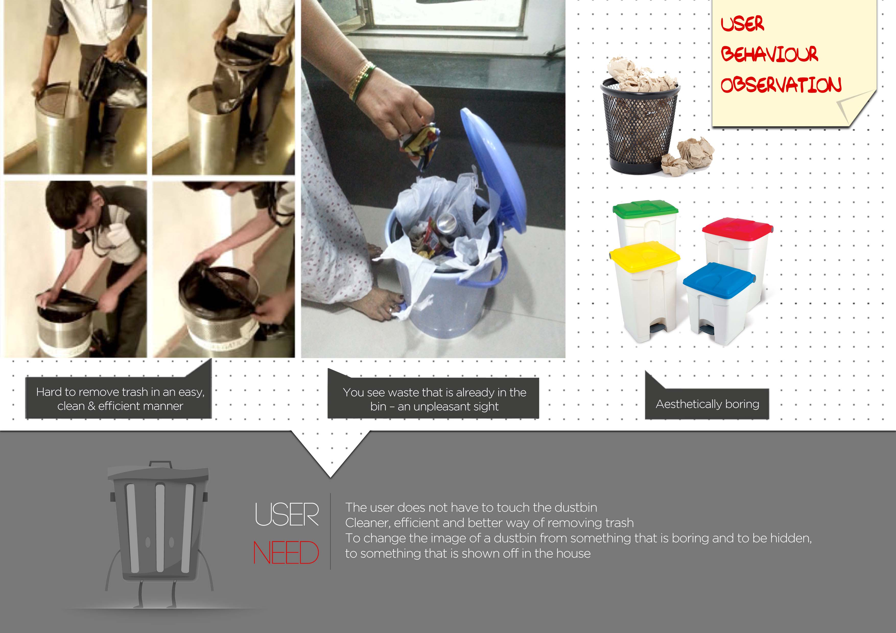
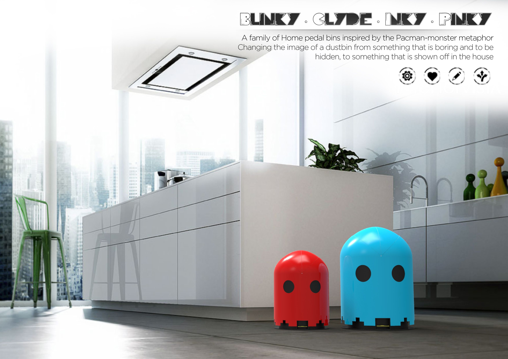

Dustbins are always regarded as something of an eyesore because they are dirty and smelly. It is also hard to remove trash in an easy and clean way and also you can see waste that is already in the bin – an unpleasant sight. Thus, the aim was to use an efficient and effective method of waste disposal while at the same time changing the image of a dustbin from something that is hidden to something that is shown off as a Home decor & Furnishing product.
 Year: 2014 - 2015 Project Type: Household product design Team members: Individual projectObservational study was carried to find out how people interact and behave when they use a bin. Next involved finding an appropriate inspiration and metaphor that is commonly recognized and can be related by people so as to change the perception people have about dustbins at home. This research and inspiration phase lead to coming up with various different concepts and ideas. One of the ideas was further developed to be designed for the different senses.
My role: user behaviour observation & interviews, conceptualisation, sketching of ideas, 3D modelling & technical drafting and final 3D rendering of the product.SHOW MORE
A family of dustbins, which people will treat it like a ‘being’ and show it off in the house. With the help of an in-built bin liner roll-dispenser the user does not have to touch the bin, thus ensuring clean and efficient removal of waste. The presence of an inner lid prevents the smell from spreading around when the bin is being used. It also prevents the user from seeing the waste that is already present in the bin. The external cover of the dustbin is interchangeable thus allowing the user to customize it to any color or designs depending on the user’s likes or the interiors of the room it is placed in.
 Awards: Raffles International Design Award 2014, DesignOmics Award 2014, IDesign Award 2015, A’Design Award 2016